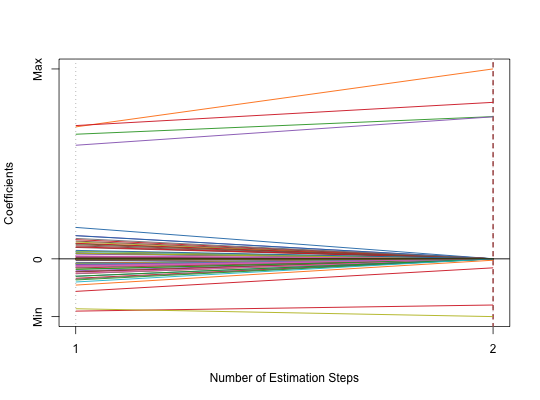

Adaptive SCAD-Net
asnet(x, y, family = c("gaussian", "binomial", "poisson", "cox"), init = c("snet", "ridge"), nfolds = 5L, gammas = c(2.01, 2.3, 3.7, 200), alphas = seq(0.05, 0.95, 0.05), eps = 1e-04, max.iter = 10000L, gamma = 1, seed = 1001, parallel = FALSE, verbose = FALSE)
family is "gaussian",
"binomial" or "poisson".
If family is "cox", a response matrix made by
Surv."gaussian",
"binomial", "poisson", or "cox"."snet" or "ridge".gammas to use in SCAD-Net.alphas to use in SCAD-Net.weights = coefs^(-gamma).doParallel package and run registerDoParallel()
with the number of CPU cores before calling this function.List of coefficients beta and
ncvreg model object model.
dat = msaenet.sim.gaussian(n = 150, p = 500, rho = 0.6, coef = rep(1, 5), snr = 2, p.train = 0.7, seed = 1001) asnet.fit = asnet(dat$x.tr, dat$y.tr, gammas = 3.7, alphas = seq(0.2, 0.8, 0.2), seed = 1002) print(asnet.fit)#> Call: asnet(x = dat$x.tr, y = dat$y.tr, gammas = 3.7, alphas = seq(0.2, #> 0.8, 0.2), seed = 1002) #> Df Lambda Gamma Alpha #> 1 8 0.2282179 3.7 0.6msaenet.nzv(asnet.fit)#> [1] 2 3 4 5 114 312 379 464#> [1] 4#> [1] 4#> [1] 2.309397plot(asnet.fit)